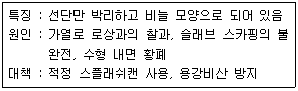
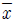
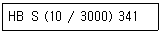

압연기능장 (2012-07-22 기출문제)
1과목: 임의 구분
1. 중후판 소재의 길이 방향과 소재의 강괴축이 직각이 되는 압연으로 제품의 폭 방향과 길이 방향의 재질적인 이방성을 감소시킬 목적으로 실시하는 압연은?
- 크로스 압연
- 제어 압연
- 폭내기 압연
- 완성 압연
(정답률: 87%)

2. 폭 퍼짐량에 대한 설명으로 옳은 것은?
- 롤 직경이 클수록 폭 퍼짐량이 작다.
- 고속압연의 경우보다 저속압연의 경우가 폭 퍼짐량이 작다.
- 표면이 평활한 롤보다는 거친 롤에 의한 경우가 폭퍼짐량이 작다.
- 동일한 압하량에서는 폭이 넓고 얇은 판에서는 폭퍼짐량이 거의 없다.
(정답률: 83%)
3. 후판 압연공정에서 소재(slab)로부터 제품(후판)을 생산할 때 거치는 공정 순서가 옳게 나열된 것은?
- 압연 →소재의 가열→전단→교정→스케일 제거→냉각
- 소재의 가열→압연→스케일 제거→냉각→교정→전단
- 스케일 제거→소재의 가열→압연→교정→전단→냉각
- 소재의 가열→스케일 제거→압연→교정→냉각→전단
(정답률: 84%)
4. 롤에서 나오는 압연재를 90° 회전 또는 옆의 공형으로 수평 이동시키거나 필요한 때에 압연재의 위치를 정정하는 장치는?
- 에져(Edger)
- 피닝 기어(Peening gear)
- 메니플레이터(Manipulator)
- 가이드 및 가드(Guilde 및 guard)
(정답률: 91%)
5. 후판압연기에서 밀정수가 1000ton/mm일 때 예측 압연력이 3000ton 이라면 10mm의 판을 만들기 위한 롤 갭(Roll Gap)은 얼마로 설정해야 하는가? (단, 롤의 변형 및 기타 사항은 무시한다.)
- 3mm
- 7mm
- 10mm
- 13mm
(정답률: 70%)
6. 유막 베어링의 특징을 설명한 것 중 옳은 것은?
- 지름을 크게 할 수 없다.
- 롤의 분해, 조립은 어렵지만 정밀도는 요구되지 않는다.
- 부화 용량이 회전 상승과 함께 감소하지 않고 항상 일정하다.
- 마멸 및 재료의 피로가 많기 때문에 베어링의 수명이 짧다.
(정답률: 75%)
7. 다음 중 연속식 가열로가 아닌 것은?
- 퓨셔식 가열로
- 피트식 가열로
- 워킹빔식 가열로
- 회전로상식 가열로
(정답률: 84%)
8. 사상압연작업에서 롤단위 편성 기본원칙 중 정기수리 기간 전·후의 편성원칙에 대한 설명으로 틀린 것은?
- 정기수리 후의 압연은 백업 롤의 워밍업 및 온도확보 등을 고려하여 부하가 적은 후물재를 편성한다.
- 롤 정비능력 등을 고려하여 박물단위는 연속적으로 3단위 투입은 재한한다.
- 백업 롤 마모로 인한 평탄도 불량을 고려하여 계획 휴지직전에는 극박판 및 광폭재를 투입한다.
- 정기수리 전 및 로내재 단위는 로 수리 보열 및 정수 직후의 압연조건을 고려하여 후물 또는 추출온도가 낮은 단위로 한다.
(정답률: 89%)
9. 롤의 이상마모나 판에 국부적인 돌기가 생긴 판 크라운(Crown)을 무엇이라 하는가?
- Body Crown
- Edge Drop
- Wedge
- High Spot
(정답률: 80%)
10. 열연박판 작업시 노 내를 3개의 대(zonc)로 나눌 때 각 대에서 투입되는 연료의 비율로 옳은 것은?
- 예열대 65%, 가열대 25%, 균열대 10%
- 예열대 10%, 가열대 25%, 균열대 65%
- 예열대 40%, 가열대 55%, 균열대 5%
- 예열대 5%, 가열대 55%, 균열대 40%
(정답률: 81%)
11. 라우드식 3단 압연기에서 압연 소요동력을 줄이고 작업 효율을 좋게 하기 위해서 상·하 롤에 비하여 중간 롤의 크기는 어떻게 해야 하는가?
- 무관하다.
- 같게 한다.
- 작게 한다.
- 크게 한다.
(정답률: 88%)
12. 가열로에서 탄소강이 적열된 색깔 중 가장 높은 온도를 나타내는 색은?
- 황색
- 백색
- 붉은색
- 앵두색
(정답률: 96%)
13. 열연코일을 생산할 때 완성압연기(사상압연기, 다듬질 압연기)를 통과한 뒤, 권취기(다운 코일러)에서 권취되기 전에 있는 긴 대상의 압연재의 명칭은?
- 바(Bar)
- 코일(Coil)
- 스트립(Strip)
- 스켈프(Skelp)
(정답률: 92%)
14. 압연재가 롤 사이로 들어가면 압연기와 롤, 쵸크 등의 탄성변형 때문에 간격이 넓어지게 되는 현상은?
- 증폭량
- 롤 플레이팅
- 스트라이크
- 밀 스프링
(정답률: 95%)
15. 절대점도에 대한 설명으로 틀린 것은?
- 액체의 절대점도는 3개의 차원을 이용하여 나타낼 수 있다.
- 액체의 정도를 측정하는 보편적인 방법은 시간에 관한 단위에 바탕을 두고 있다.
- 절대점도는 일정시간 내에 일정한 길이의 관 속을 흐를 수 있는 유체의 중량 또는 유체의 질량에 따라 결정된다.
- 액체의 유속이 증대하거나 또는 움직인 거리가 커진다는 것은 액체의 점도가 증가 한다는 것을 말한다.
(정답률: 84%)
16. 가열로의 조로시 강편에 발생되는 스케일 발생을 억제 하는 방법으로서 적당하지 않은 것은?
- 로내 분위기를 환원성에 가깝게 해준다.
- 중유 온도를 높여주고 무화 상태를 양호하게 한다.
- 로압을 약간 높여 외부로부터의 산소침입을 방지한다.
- 로압을 낮춘 상태에서 로내 분위기를 산화성으로 해준다.
(정답률: 86%)
17. 권취 형상 불량 즉, 텔레스코프 또는 코일이 느슨해지는 원인이 아닌 것은?
- Wrapper Roll 압력이 과대한 경우
- 권취 장력 설정이 과대한 경우
- 사이드 가이드 개도 설정이 불량한 경우
- 상하 핀치 롤 및 맨드렐 평행도가 불량한 경우
(정답률: 60%)
18. [보기]는 후판제품의 표면에 발생한 결함의 특징, 원인 그리고 대책을 기술하였다. 어떤 결함인가?

- 귀공
- 스카핑흠
- 스캡
- 펀치흠
(정답률: 90%)
19. 슬래브 14500ton을 압연하여 코일 12500ton을 생산 하였다. 이 때의 압연 실수율은 약 몇 % 인가? (단, 재열재는 600ton 이 발생하였으며, 재열재는 소재 처리량에 포함되지 않는다.)
- 80%
- 85%
- 90%
- 95%
(정답률: 73%)
20. 연강판에 각종 금속의 우수한 성능을 갖추게 하기 위하여 연강 후판의 한쪽 또는 양면에 니켈, 황동, 스테인리스강, 티타늄 등을 열간 압연 또는 단접에 의하여 압착한 강판은?
- 클래드 강판
- 보일러용 강판
- 조선용 강판
- 프레임용 강판
(정답률: 95%)
2과목: 임의 구분
21. 판재 압연시 압연재가 롤에 감겨서 아래쪽으로 처지거나 위쪽으로 감겨 올라가는 것을 방지하기 위해 설치하는 것은?
- 리피터(Repeater)
- 사이드 가이드(Side guide)
- 딜리버리 가이드(Delivery guide)
- 스트립퍼 가이드(Stripper guide)
(정답률: 74%)
22. 열간유압연의 효과라고 보기에 가장 어려운 것은?
- 롤 표면을 개선한다.
- 롤 교체 1회당 압연 매수를 증가시킨다.
- 마찰계수의 감소에 의한 압연하중을 저하시킨다.
- 롤의 초기 크라운(Initial Crown)을 개선 한다.
(정답률: 66%)
23. 냉연 박판의 제조 공정순서가 옳게 나열된 것은?
- 산세→냉간압연→표면청정→풀림→조질압연→전단 리코일
- 냉간압연→산세→표면청정→풀림→조질압연→전단 리코일
- 표면청정→산세→냉간압연→조질압연→풀림→전단 리코일
- 조질압연→냉간압연→산세→표면청정→풀림→전단 리코일
(정답률: 92%)
24. 사상압연기에서 와이퍼(Wiper)의 역할로 옳은 것은?
- 최종 사상압연기와 권취기를 연결하는 설비이다.
- 롤 냉각수가 판에 떨어지는 것을 방지하여 판의 온도저하를 방지하는 것이다.
- 스텐드간 자료에 적절한 일정 장력을 주어 스텐드간 압연상태를 안정시키는 것이다.
- 상·하 워크 롤 출측에 각각 배치된 유도판으로 압연재가 롤에 감겨 붙지 않도록 하는 것이다.
(정답률: 89%)
25. 루프제어 시스템 중 소재가 후단 압연기 메탈 오프(metal off)직전에 루퍼의 높이와 장력의 참조값을 감소시킴으로써 열연판이 압연기를 빠져 나갈 때, 소재가 원활하게 통판되도록 하게 하는 기능은?
- 트랭킹(tracking) 기능
- 노 휘프(no-whip) 제어 기능
- 소프트 터치(soft touch) 제어 기능
- 비간섭 제어(non-interactive control)기능
(정답률: 92%)
26. 슬리팅 작업에서 코일의 양 가장자리(Edge)부분만 사이드 트리밍만 실시하고 다시 감는 작업은?
- 리듀싱
- 리와인딩
- 레벨러
- 리젝트 파일러
(정답률: 89%)
27. 열간압연에서 제품의 두께 변동에 영향을 주는 요인 중 영향이 가장 적은 것은?
- 슬래브 두께 변동
- 압연온도의 변동
- 슬래브 폭의 변동
- 스탠드 간 텐션의 변동
(정답률: 68%)
28. 다음 중 압하율을 크게 하는 방법으로 틀린 것은?
- 지름이 큰 롤을 사용한다.
- 압연재의 온도를 높여준다,
- 롤의 회전 속도를 빨리한다.
- 롤 측에 평행인 홈을 롤 표면에 만든다.
(정답률: 84%)
29. 금속재료의 소성가공 방법이 아닌 것은?
- 프레스
- 압출, 인발
- 단조, 압연
- 주조, 정정
(정답률: 90%)
30. 냉연 공정 중 표면청청 작업의 목적과 관계없는 것은?
- 스케일 제거
- 압연유 제거
- 도금불량 원인 제거
- 풀림시 유분해에 의한 탄화물 제거
(정답률: 85%)
31. 열간압연과 비교하였을 때 냉간압연의 특징에 해당하지 않는 것은?
- 표면이 깨끗하다.
- 가공량이 크다.
- 치수가 정확하다.
- 얇은 판재 압연이 가능하다.
(정답률: 92%)
32. 한 번 어느 방향으로 소성변형을 가한 재료에 역방향의 하중을 가하면 전과 같은 방향으로 소성변형을 할 경우 보다는 소성변형에 대한 저항이 감소한다. 이것을 무엇 이라고 하는가?
- 바우싱거 효과(bauschinger effect)
- 오렌지 필 효과(orange peel effect)
- 코트렐 효과(xottrel effect)
- 엘라스틱 효과(elastic effect)
(정답률: 90%)
33. 비교적 둥근 모양의 가느다란 스케일이 모래를 뿌린 모양으로 발생하고 흑갈색을 띠는 모래형 스케일의 특징을 설명한 것 중 틀린 것은?
- 홈의 깊이는 비교적 얕다.
- 탄소 함유량이 적은 것일수록 발생하기 쉽다.
- 홈의 정도는 바(bar)의 압연 온도가 높은 것일수록 심하다.
- 판 전폭에 겹쳐 발생하는 것이 많지만 띠모양으로 발생하는 것도 있다.
(정답률: 81%)
34. 압하 설비 중 유압방식의 특징이 아닌 것은?
- 압하의 적응성이 좋다.
- 최적 압하 속도를 쉽게 얻을 수 있다.
- 압연 사고에 의한 과대 부하의 방지가 불가능 하다.
- 압연 목적에 따라 스프링 정수를 바꿀 수 있다.
(정답률: 87%)
35. 압연 제품의 검사 중 커다란 영구 변형에 견디는지의 여부를 조사하는 시험법은?
- 충격 시험
- 경도 시험
- 커핑 시험
- 굴곡 시험
(정답률: 80%)
36. 알루미늄 아연 합금 도금 강판의 특징을 설명할 것 중 틀린 것은?
- 적절한 용접 조건에서는 용접이 용이하다.
- 흑색으로 내열성은 좋지 않으나, 미려한 표면 외관을 지니고 있다.
- 아연 도금 강판과 거의 동등한 가공성과 도장성을 지니고 있다.
- 장기 내구성이 우수하며, 아연 도금 강판에 비해 수명이 길다.
(정답률: 80%)
37. 냉기압연시를 롤(roll)의 탄성변형과 강판(Strip)의 소성변형에 의해 강판의 에지(Edge)부 판 두께가 급격히 감소하는 현상은?
- Edge Up
- Edge Drop
- Side Flat
- Flat Edge
(정답률: 89%)
38. 디스케일링(Descaling)에 대한 설명 중 옳은 것은?
- 권취온도가 높을수록 산세 시간은 짧아진다.
- 산농도가 높을수록 디스케일링 능력은 저하된다.
- 규소강판 등의 특수강종일수록 디스케일링 시간은 길어진다.
- 황산의 경우 철분이 증가함에 따라 디스케일링 능력은 증가한다.
(정답률: 82%)
39. 냉연 제품 중 PO(pickeld &oiled steel)가 의미하는 것은?
- 열연 코일을 냉연 산세 공정에서 염산(HCI)을 이용하여 표면 스케일을 제거한 제품이다.
- 냉연 강판을 재료로 내식성 및 도장성을 개선하기 위하여 전기 도금을 한 제품이다.
- 냉간 압연 코일 또는 산세처리 한 열연 코일을 연속 용융 도금 라인에서 열처리 하여 소재의 재질을 확보한 후 아연욕에 통과시켜 도금한 제품이다.
- 산세 공정에서 스케일이 제거된 열연 코일을 고객이 요구하는 소정의 두께 확보를 위하여 상온에서 냉간 압연한 제품이다.
(정답률: 77%)
40. 열간압연이 끝난 열연코일을 냉각 후에 실시하는 조질압연(스킨패스)작업의 가장 큰 목적은?
- 코일의 용접
- 표면의 도금
- 산화피막의 형성
- 열연 스트립의 형상을 교정
(정답률: 91%)
3과목: 임의 구분
41. 1조의 수평 롤에 1조의 수직, 롤을 설치하여 두께 압하와 동시에 폭 방행의 압연을 가능하게 한 것으로 수평 롤과 수직 롤의 모양과 위치를 적당히 조절하면 I형강, H형강 등의 압연이 가능한 압연기는?
- 센지미어 압연기
- 유니버설 압연기
- 로온식 다단 압연기
- 가역식 2단 압연기
(정답률: 88%)
42. 일산화탄소(CO) 1Nm3 을 연소시키는데 필요한 공기량(Nm3)은?
- 1.28
- 2.38
- 4.29
- 5.29
(정답률: 70%)
43. 축의 완성지름, 철사의 인장강도, 아스피린 순도와 같은 데이터를 관리하는 가장 대표적인 관리도는?
- c 관리도
- nP 관리도
- u 관리도

- R 관리도
(정답률: 63%)
44. 로트의 크기가 시료의 크기에 비해 10배 이상 클 때, 시료의 크기와 합격판정개수를 일정하게 하고 로트의 크기를 증가시킬 경우 검사특성곡선의 모양 변화에 대한 설명으로 가장 적절한 것은?
- 무한대로 커진다.
- 별로 영향을 미치지 않는다.
- 샘플링 검사의 판별 능력이 매우 좋아진다.
- 검사특성곡선의 기울기 경사가 급해진다.
(정답률: 63%)
45. 작업시간 측정방법 중 직접측정법은?
- PTS법
- 경험견적법
- 표준자료법
- 스톱워치법
(정답률: 83%)
46. 준비작업시간 100분, 개당 정미작업시간 15분, 로트 크기 20일 때 1개당 소요작업시간은 얼마인가? (단, 여유시간은 없다고 가정한다.)
- 15분
- 20분
- 35분
- 45분
(정답률: 61%)
47. 소비자가 요구하는 품질로서 설계와 판매정책에 반영되는 품질을 의미하는 것은?
- 시장품질
- 설계품질
- 제조품질
- 규격품질
(정답률: 83%)
48. 다음 중 샘플링 검사보다 전수검사를 실시하는 것이 유리한 경우는?
- 검사항목이 많은 경우
- 파괴검사를 해야 하는 경우
- 품질특성치가 치명적인 결정을 포함하는 경우
- 다수 다량의 것으로 어느 정도 부적합품이 섞여도 괜찮을 경우
(정답률: 86%)
49. 다음 중 분말야금에 대한 설명으로 틀린 것은?
- 고용도의 제한이 없기 때문에 다양한 합금설계가 가능하다.
- 생산할 수 있는 제품의 크기와 형상에는 제한이 없다.
- 최종제품의 형상으로 가공할 수 있어 절삭가공의 생략이 가능하다.
- 용융점이 높은 재료의 경우에도 용융하지 않고 제품을 제조할 수 있다.
(정답률: 72%)
50. 구상화주철의 용해시 생기는 페이딩(fading) 현상과 관련된 내용으로 틀린 것은?
- fading 현상은 구상흑연수를 감소시킨다.
- 용탕의 온도가 높을수록 fading 현상은 빠르다.
- 슬래그를 빨리 제거할수록 fading 현상은 빨라진다.
- 구상흑연 제조시 마그네슘이 과다인 경우 fading현상이 조기에 일어난다.
(정답률: 65%)
51. 헤드필드(Hadfieid) 강에 대한 설명으로 틀린 것은?
- 마텐자이트 조직을 가진 강이다.
- 고온에서 서냉하면 결정립계에 M3O가 석출한다.
- 고온에서 서냉하면 오스테나이트가 마텐자나이트로 변태한다.
- 열전도성이 나쁘고, 팽창계수도 커서 열변형을 일으킨다.
(정답률: 50%)
52. 브리넬 경도가[보기]와 같이 표현되었을 때 이에 따른 설명으로 틀린 것은?

- HB : 압입자의 종류
- 10 : 입입자의 직경(mm)
- 3000 : 시험 하중(kg)
- 341 : 브리넬 경도값
(정답률: 67%)
53. 다음 중 Ni-Fe 합금이 아닌 것은?
- 엘렉트론(Elektron)
- 니칼로이(Nicalloy)
- 퍼멀로이(Permalloy
- 플래티나이트(Platinite)
(정답률: 73%)
54. 2종 이상의 금속원자가 간단한 원자비로 결합되어 본래의 물질과 전혀 다른 결정격자를 형성한 물질을 무엇이라 하는가?
- 고용체
- 금속간 화합물
- 편석
- 불규칙 변태
(정답률: 84%)
55. 7:3 황동에 Fe 2% 와 소량의 Sn, Al 을 첨가한 합금은?
- German Silver
- Muntz Metal
- Tin Bronze
- Durana Metal
(정답률: 68%)
56. 안전교육의 방법 중 토의법을 적용하는 경우가 아닌 것은?
- 수업의 초기 단계에 적용한다.
- 팀워크가 필요로 하는 경우에 적용한다.
- 알고 있는 지식을 심화하기 위해 적용한다.
- 어떠한 자료에 대해 보다 명료한 생각을 갖게 하는 경우에 적용한다.
(정답률: 86%)
57. 다음 중 안전점검의 가장 주된 목적은?
- 위험을 사전에 발견하여 개선하는데 있다.
- 법 및 기준에 적합 여부를 점검하는데 있다.
- 안전사고의 통계율을 점검하는데 있다.
- 장비의 설계를 하기 위함이다.
(정답률: 91%)
58. 다음 중 유연생산시스템(FMS)의 대한 설명으로 틀린 것은?
- 새로운 공작물의 생산 준비 기간이 길어진다.
- 기계의 이용률이 높아지고 임금이 절약된다.
- 생산 기술자가 적극적으로 참여한다.
- 생산 기간의 단축과 납기가 단축된다.
(정답률: 89%)
59. 유압의 제일 기본 원리인 파스칼(Pascal)의 원리에 대한 설명 중 틀린 것은?
- 액체의 압력은 수평으로 작용한다.
- 액체의 압력은 각면에 직각으로 작용한다.
- 각 점의 압력은 모든 방향에 동일하게 적용한다.
- 밀폐된 용기 내 액체에 가해진 압력은 동일한 크기로 각부에 전달된다.
(정답률: 89%)
60. 다음 중 공압장치에 대한 설명으로 틀린 것은?
- 인화의 위험이 없다.
- 에너지 축적이 용이하다.
- 압축공기의 에너지를 쉽게 얻을 수 있다.
- 정확한 위치결정 및 중간정지가 가능하다.
(정답률: 84%)